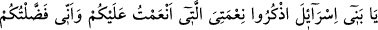
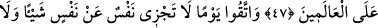
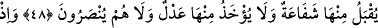
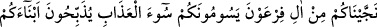
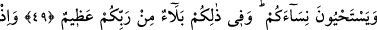
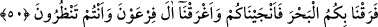
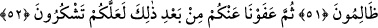
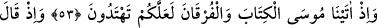
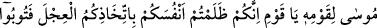
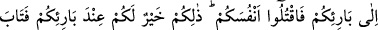
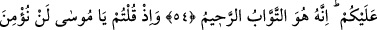
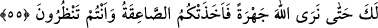
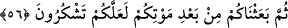
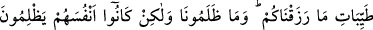
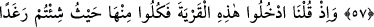
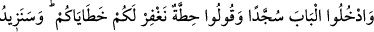
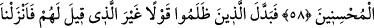
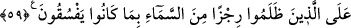
İSRÂİLOĞULLARI’NA VERİLEN NİMETLER
47. Ey İsrâîloğulları! Size verdiğim nimetimi ve sizi (bir zamanlar) cümle âleme
üstün kıldığımı hatırlayın.
48. Öyle bir günden korkun ki, o günde hiç kimse başkası için herhangi bir
ödemede bulunamaz; hiç kimseden (Allah izin vermedikçe) şefâat kabûl olunmaz,
fidye alınmaz; onlara asla yardım da yapılmaz.